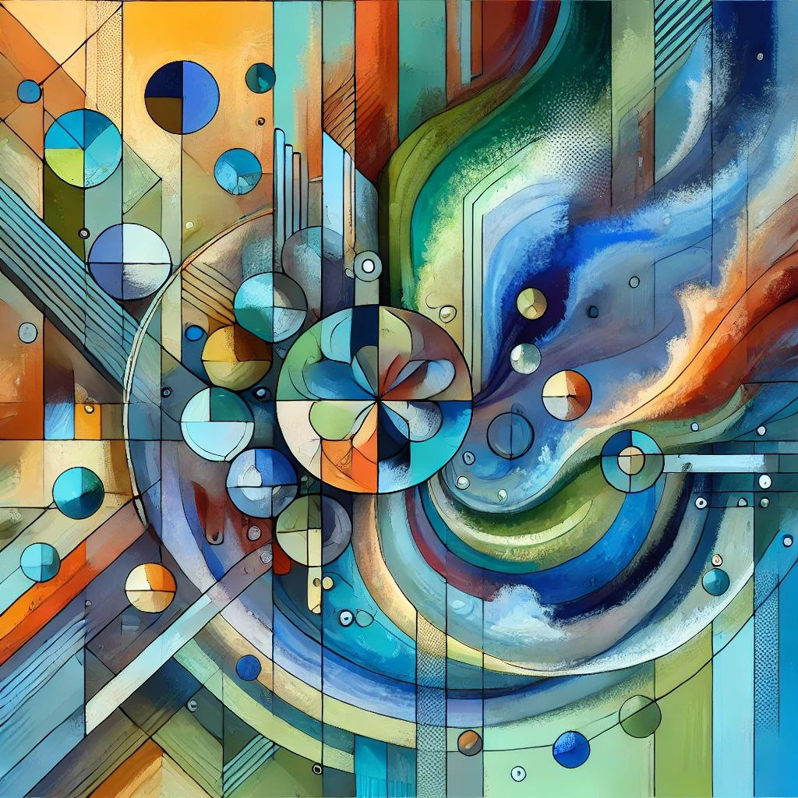

антипазл - Эрудированный Полиглот.
Простая, но увлекательная игра.
Правила игры:- Есть фото, которое скрыто за фоном.
- Нажимая на фон - постепенно открывается картинка.
- Как только ты знаешь что изображено и можешь выбрать правильный ответ - нажми на него.
Темы:- Картины
- Техника.
- Животные.
Сложность:- Разное количество секций фона. От 2 до 128 секций.
- Варианты ответа. От 2 до 8 вариантов.
- Текстовая подсказка. Текстовое описание или загадка скрытого изображения.
- Режим "Полиглот". Для ответов используются одновременно разные языки.
Game